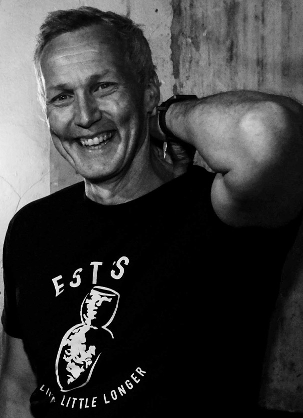

About Andrew Wilkins
Andrew Wilkins has spent more than three decades working in financial markets as a trader, portfolio manager, risk executive and regulatory consultant.
His career has ranged from open-outcry trading pits and hedge funds to electronic trading, market surveillance, algorithmic controls and board-level risk oversight. He has held senior roles across trading, risk, compliance and technology, advising both global institutions and fast-growing firms operating in complex market environments.
Alongside his professional work, Andrew has spent a lifetime studying decision-making, attention, performance and human behaviour. A martial artist for more than fifty years, he has long been fascinated by the relationship between perception, judgement and action under pressure.
He is also a writer, speaker and practitioner of AI-assisted workflows, with a particular interest in how technology is changing the way people think, learn and make decisions.
Andrew is the creator of Clarity Cycle, a practical system designed to improve attention, judgement and pattern recognition through short daily exercises.
He lives in Essex with his beautiful wife Sadie and continues to write, build, teach and ask awkward questions.
